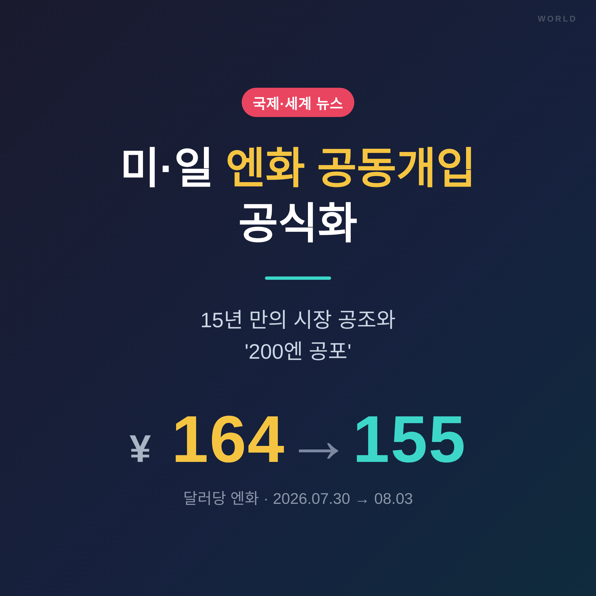
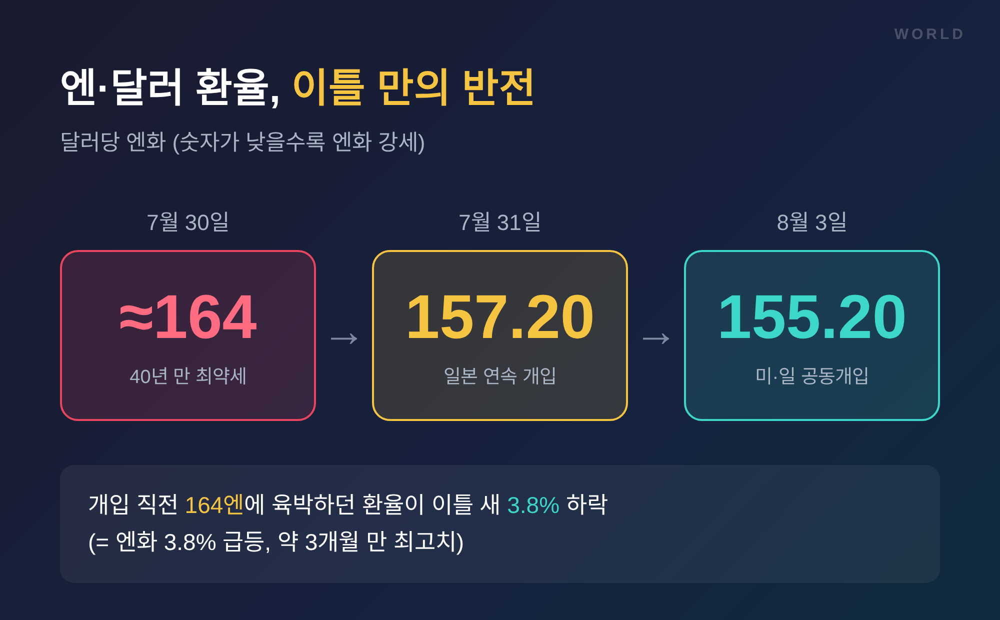
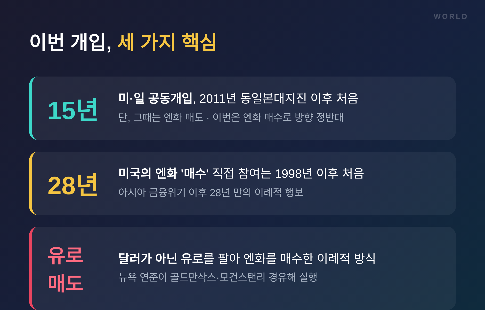
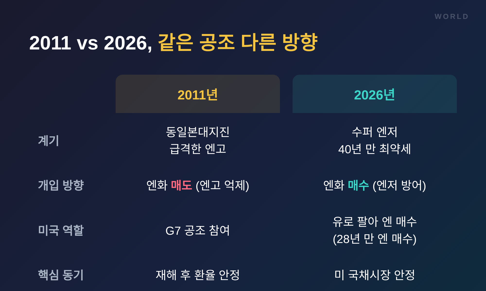
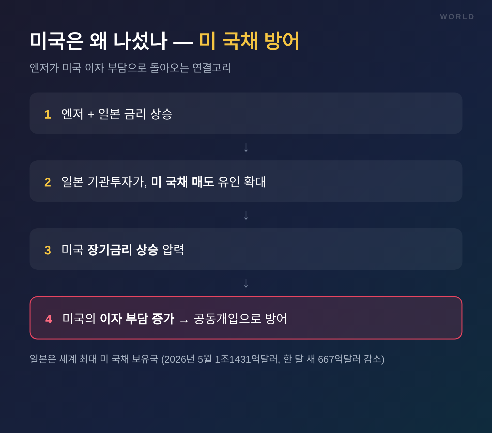
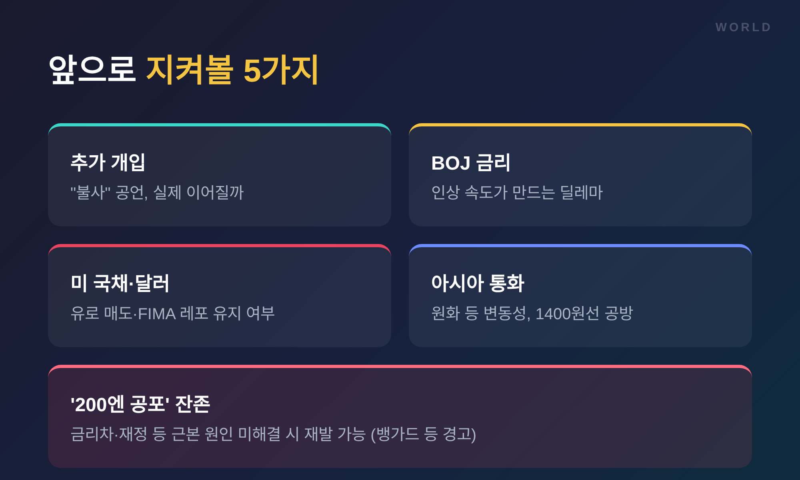

이번 글에서는 2026년 7월 말 벌어진 미·일 엔화 공동개입을 정리해 보겠습니다. 무슨 일이 있었는지, 왜 미국까지 나섰는지, 그리고 시장이 여전히 '200엔'을 말하는 이유까지 차분히 짚어보려 합니다.
■ 이틀 밤에 무슨 일이 있었나
시작은 조용했습니다.
7월 30일과 31일, 이틀 연속으로 일본 정부와 일본은행(BOJ)이 뉴욕 외환시장에서 달러를 팔고 엔화를 사들였습니다. 여기까지는 일본의 단독 방어로 보였습니다.
그런데 이번엔 달랐습니다.
미국이 뉴욕 연방준비은행을 통해 유로를 팔아 엔화를 매수하며 보조를 맞춘 사실이 드러난 것입니다. 8월 2일 도널드 트럼프 미국 대통령이 개입 사실을 먼저 알렸고, 이튿날 가타야마 사쓰키 일본 재무상이 "미 동부시간 7월 31일 미국 재무부와 협조해 엔화 매수 개입을 실시했다"고 공식 확인했습니다.
환율은 즉각 반응했습니다.
개입 직전 달러당 164엔에 육박하던 엔·달러 환율(7월 30일 종가 162.66엔)은 1986년 이후 40년 만의 최고, 곧 엔화로서는 최약세 수준이었습니다. 개입이 이어지자 31일 한때 157.20엔까지 내려왔고, 공동개입이 공식화된 뒤에는 한때 155.20엔까지 밀렸습니다. 이틀 새 엔화가 3.8% 급등한 셈입니다.
동원된 실탄도 상당했습니다. 일본 당국의 개입 규모는 6조~7조엔, 우리 돈으로 약 55조~64조원으로 추산됩니다. BOJ 데이터를 근거로 한 외신 분석은 7월 30일 뉴욕 개입에만 최대 589억달러가 쓰였을 수 있다고 봤습니다. 미국 쪽에서도 베선트 장관의 회의 메모에 '50억~100억달러 규모 엔화 매수'가 할 일 목록으로 적혀 있었던 것으로 전해졌습니다. 규모만 보아도 일회성 신호가 아니라는 점이 읽힙니다.

■ 왜 이 개입이 특별한가
숫자 하나로 요약됩니다. 15년.
미·일이 함께 외환시장에 들어간 것은 2011년 동일본대지진 당시 G7 공조 이후 15년 만입니다. 다만 방향이 정반대입니다. 그때는 급격한 엔고를 누르기 위한 '엔화 매도'였고, 이번은 엔저를 막기 위한 '엔화 매수'였습니다.
미국이 엔화를 사들이는 쪽에 직접 선 것은 더 오래된 일입니다. 1998년 아시아 금융위기 이후 28년 만입니다.
방식도 이례적이었습니다.
보통은 달러를 팔아 다른 통화를 삽니다. 그런데 이번에 뉴욕 연준은 골드만삭스·모건스탠리를 거쳐 달러가 아닌 유로를 팔아 엔화를 매수했습니다. 자국 통화인 달러의 가치를 직접 깎지 않으려는 계산으로 읽힙니다. 다만 이를 두고 미국 언론에서는 "이상하고 현명하지 못하다"는 비판도 나왔습니다. 시장에 괜한 의문을 안긴다는 우려입니다.


■ 미국은 왜 남의 나라 환율에 돈을 썼나
여기서 자연스러운 의문이 생깁니다. 왜 미국이 나섰을까요.
핵심은 미국 자신의 국채시장입니다.
일본은 세계 최대의 미 국채 보유국입니다. 2026년 5월 기준 보유액이 1조1431억달러인데, 한 달 새 667억달러가 줄었습니다. 엔저와 일본 금리 상승이 겹치면 일본 기관투자가들이 미 국채를 내다 팔 유인이 커집니다. 그 매도가 미국 장기금리를 밀어 올리면, 결국 미국의 이자 부담으로 돌아옵니다.
즉 이번 개입은 '일본을 위한 호의'인 동시에 '미국을 위한 방어'이기도 합니다. 트럼프 대통령은 "우정의 표시"라고 했고, 베선트 재무장관은 "엔화의 실질적 저평가를 바로잡으려는 일본을 강력히 지지한다"며 추가 공동개입도 주저하지 않겠다고 했습니다.
준비도 하루아침에 이뤄진 게 아니라는 정황이 있습니다. 일부 외신은 이번 공조를 9개월가량 물밑에서 다듬어온 사실상의 '통화동맹'으로 해석했습니다. 베선트 장관은 한발 더 나아가, 일본이 미 국채를 직접 팔지 않고도 달러를 조달할 수 있도록 연준의 긴급 자금공급 창구(FIMA 레포)를 넓히는 방안까지 밀어붙이고 있는 것으로 알려졌습니다. 개입을 넘어 제도적 안전판을 깔려는 움직임입니다.
일본 입장에서도 절박했습니다. 엔저는 수입 물가를 밀어 올려 가계를 압박했고, 다카이치 사나에 총리의 지지율에도 부담이 됐습니다. 4~5월에도 일본은 홀로 엔화 매수에 나섰지만 반등은 잠깐에 그쳤습니다. 혼자서는 역부족이었던 셈입니다. 양국의 이해가 맞아떨어진 대목입니다.

■ 개입해도 남는 '200엔 공포'
그렇다면 이제 엔저는 끝난 걸까요. 시장의 답은 조심스럽습니다.
BOJ는 6월에 기준금리를 31년 만의 최고인 1%까지 올렸습니다. 그런데도 엔화는 더 떨어졌습니다. 미국 등과의 금리차가 여전히 크기 때문입니다. 여기에 다카이치 내각의 확장 재정과 소비세 감세 기조가 엔화 신뢰를 흔들고 있습니다.
그래서 월가에서는 여전히 '1달러=200엔' 시나리오가 거론됩니다. 뱅가드그룹은 BOJ의 정책 변화가 일본 국채금리를 충분히 끌어올리지 못하면 엔·달러가 200엔까지 갈 위험이 있다고 경고했습니다.
또 하나의 뇌관은 엔캐리 트레이드입니다.
저금리 엔화를 빌려 고금리 자산에 투자한 자금이 급하게 청산되면 시장이 출렁입니다. 실제로 2024년 8월 5일에는 그 충격으로 닛케이지수가 12.4% 급락했고, 한국과 대만 증시도 8% 넘게 빠지는 '블랙 먼데이'가 있었습니다.
조나스 골터만 캐피털이코노믹스 수석시장이코노미스트는 "엔화 매도 포지션이 과도하게 쌓여 있다"며 2024년 여름과 유사한 청산이 재현될 수 있다고 경고했습니다. BOJ가 이번에 금리를 동결하면서도 조기 인상 가능성을 어느 때보다 분명히 내비친 것도 이런 긴장과 무관하지 않습니다.
한국도 남의 일이 아니었습니다. 엔화가 강해지자 원화도 함께 올라 원·달러 환율이 1420원대로 내려왔습니다. 장중에는 1419원까지, 한·미·일 삼각 공조설이 돌 때는 1410원대까지 떨어졌습니다. 7월 한 달 종가 기준 낙폭은 125.4원으로, 2009년 3월 글로벌 금융위기 이후 가장 컸습니다. 한국 외환당국도 30일 밤 비슷한 시점에 원화를 사들인 것으로 전해졌습니다. 베선트 장관은 "원화까지 무너질 수 있었다"며 개입 이유를 설명했고, 미국이 원화·위안화도 방어 대상으로 시사했다는 관측까지 나왔습니다.
■ 앞으로 무엇을 지켜봐야 하나
정리하면 이렇습니다.
미·일은 실탄도, 명분도 확보했습니다. 다만 개입은 시간을 벌 뿐, 금리차와 재정이라는 근본 원인을 바꾸진 못합니다. "추세를 되돌리긴 어렵다"는 지적이 나오는 이유입니다.
관전 포인트는 네 가지로 좁혀집니다. 추가 개입이 실제로 이어질지, BOJ가 언제 금리를 더 올릴지, 미국이 유로 매도 방식과 국채 안정책을 유지할지, 그리고 원화를 비롯한 아시아 통화가 어디까지 흔들릴지입니다.

끝으로 한 마디만 더 드리겠습니다.
이번 공조가 보여준 것은 환율이 더 이상 한 나라만의 문제가 아니라는 사실입니다.
"엔화의 흔들림은, 결국 이웃의 흔들림이다."
15년 만의 손잡음이 잠깐의 진화로 끝날지, 새로운 통화 질서의 시작이 될지. 그 답은 다음 개입이 필요해지는 순간, 다시 시장이 말해줄 것입니다.